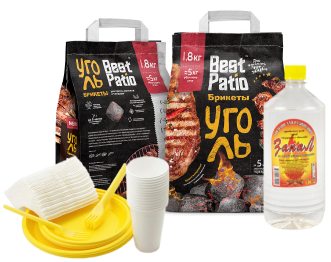

Более 20 лет успешно работает на рынке товаров народного потребления. Многие крупные известные в Красноярске торговые сети доверили нам производство одноразовой посуды под собственной торговой маркой (СТМ), что говорит о ее высоком качестве. Перед выпуском вся продукция прошла серьезные испытания и исследования, что подтверждается наличием всех необходимых заключений и разрешений. В 1995 году компания запустила собственное упаковочное производство наборов одноразовой посуды под торговой маркой «Веселый пикничок».С 1997 года компания осуществляет деятельность по упаковке наборов одноразовой посуды, угля и другого производимого ассортимента для сторонних организаций под их собственными брендами. На сегодняшний день мы имеем достаточный опыт и производственные мощности для того, чтобы производить данную продукцию в промышленных объемах.
Для бизнеса
Производим товары под собственными торговыми марками

ПОЛУЧИТЬ КОММЕРЧЕСКОЕ ПРЕДЛОЖЕНИЕ